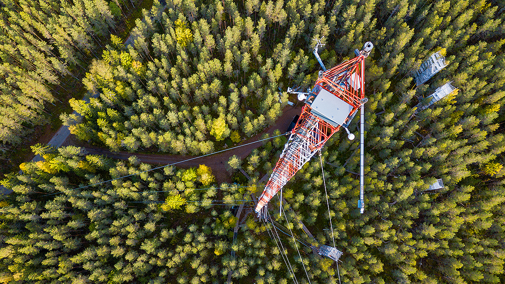

Brief Bio
I am a Research Engineer / Scientist in the Department of Civil, Construction, and Environmental Engineering at the University of Alabama, working with Prof. Mukesh Kumar. I work at the intersection of ecohydrology, Earth system science, and data science. By combining eddy-covariance flux observations, satellite remote sensing (including next-generation high-resolution thermal/SAR/optical missions e.g., Hydrosat's VanZyl constellation, NISAR, etc.), land surface models, and physics-informed machine learning (for improved model parameterization and structural improvements of process-based models), I work to improve how we observe and predict evapotranspiration and its individual components (direct soil/canopy evaporation and plant transpiration), soil moisture (surface and root-zone), and eco-hydrological extremes such as plant mortality, droughts, and floods.
Positions / Employment
Dec 2024 – present
Dec 2023 – Dec 2024
Aug 2019 – Dec 2023
Jun 2018 – Jul 2019
Jul 2016 – Jun 2018
Education
2023 · Advisor: Mukesh Kumar
2018 · Advisor: T. I. Eldho
2016
Research at a Glance

Click to enlarge.
I combine ground-based observations (eddy-covariance water & carbon fluxes from FLUXNET; plant water use from SAPFLUXNET, PSInet) with satellite remote sensing across the thermal, optical, and LiDAR domains (ECOSTRESS, MODIS, Landsat, GEDI, and next-generation missions such as Hydrosat's Van Zyl constellation and NISAR) to validate and constrain land surface models (ELM, CLM, ECOSYS) and physics-informed machine learning for improved parameterization and structure of land surface models.
The goal is to better observe and predict the land water cycle — evapotranspiration and its partitioning into plant transpiration vs. soil evaporation, soil moisture, and stomatal conductance — and to turn those improvements into tools that matter for people: drought detection, flood forecasting, numerical weather prediction, and early warning of hydrological extremes.
Research Interests
- Land–atmosphere interactions and the terrestrial water, energy, and carbon cycles
- Evapotranspiration and its partitioning (transpiration vs. evaporation); soil moisture dynamics
- Remote sensing of the hydrosphere and biosphere (thermal, optical, SAR, LiDAR)
- Land surface and Earth system modeling (ELM, CLM, ECOSYS, H08, VIC)
- Physics-informed machine learning for model improvement and process discovery
- Hydrological extremes — droughts, flash droughts, and floods — and stakeholder-relevant early-warning tools
Selected Research
A few studies that capture the direction of my work; the full list is below.
Publications
FA first author · * equal contribution · see also Google Scholar.
- 15FA Raghav, P., & Kumar, M. (2026). PULSE: A novel potential underlying water-use-efficiency-based method for latent heat and surface energy imbalance correction. Water Resources Research. DOI
- 14FA Raghav, P., & Kumar, M. (2026). Dynamic parameterization of the Priestley–Taylor coefficient for more accurate potential evapotranspiration estimation in ungauged regions. Environmental Research Letters. DOI
- 13Massoud, E. C., Collier, N., Wang, Y., Mao, J., Harpold, A., Kannenberg, S. A., Koren, G., Kumar, M., Raghav, P., Ray, P., Shi, M., Tao, J., Vasu, S. P., Wang, H., Zhu, Q., & Hoffman, F. M. (2026). Benchmarking soil moisture and its relationship to ecohydrologic variables in Earth system models. Geoscientific Model Development, 19, 3427. DOI
- 12Salvi, K., Raghav, P., Kumar, M., Magliocca, N., & Bisht, G. (2026). Discrepancy in the sign of temperature trends in reanalysis datasets. Environmental Research Letters. DOI
- 11Thakur, H., Raghav, P., & Kumar, M. (2026). How well does the Evaporative Stress Index from ECOSTRESS capture site-based stresses? Canadian Journal of Remote Sensing, 52(1). DOI
- 10Thakur, H., Raghav, P., & Kumar, M. (2025). Surface Flux Equilibrium theory–derived evapotranspiration estimate outperforms ECOSTRESS, MODIS, and SSEBop products. Geophysical Research Letters, 52(10), e2025GL114822. DOI
- 9Ghaseminejad, A., Bhat, N., Raghav, P., & Kumar, M. (2025). Influence of interannual leaf phenology dynamics on evapotranspiration predictions. Journal of Hydrometeorology, 26, 259–272. DOI
- 8FA Raghav, P., & Kumar, M. (2024). Are the ecosystem-level evaporative stress indices representative of evaporative stress of vegetation? Agricultural and Forest Meteorology, 357, 110195. DOI
- 7FA Raghav, P., Kumar, M., & Liu, Y. (2024). Structural constraints in current stomatal conductance models preclude accurate prediction of evapotranspiration. Water Resources Research, 60(8), e2024WR037652. DOI
- 6Rathore, L. S., Hanasaki, N., Kumar, M., Mekonnen, M., & Raghav, P. (2023). Water scarcity challenges across urban regions with expanding irrigation. Environmental Research Letters, 19(1), 014065. DOI
- 5FA Raghav, P., & Eldho, T. I. (2023). Investigations on the hydrological impacts of climate change on a river basin using macroscale model H08. Journal of Earth System Science, 132(2), 87. DOI
- 4FA Wagle, P.*, Raghav, P.*, Kumar, M., & Gunter, A. G. (2022). Influence of water-use efficiency parameterizations on flux-variance-similarity-based partitioning of evapotranspiration. Agricultural and Forest Meteorology, 328, 109254. DOI
- 3FA Raghav, P., Wagle, P., Kumar, M., Banerjee, T., & Neel, J. P. S. (2022). Vegetation index–based partitioning of evapotranspiration is deficient in grazed systems. Water Resources Research, 58(8), e2022WR032067. DOI
- 2FA Raghav, P., & Kumar, M. (2021). Retrieving gap-free daily root-zone soil moisture using Surface Flux Equilibrium theory. Environmental Research Letters, 16(10), 104007. DOI
- 1FA Raghav, P., Borkotoky, S. S., Joseph, J., Chattopadhyay, R., Sahai, A. K., & Ghosh, S. (2020). Revamping extended-range forecast of the Indian Summer Monsoon. Climate Dynamics, 55, 3397–3411. DOI
- ·Raghav, P., Liu, Y., Kumar, M., & Bisht, G. (2026). Multilayer canopy model outperforms big-leaf model for evapotranspiration predictions under high water and heat stress conditions. Journal of Advances in Modeling Earth Systems.
- ·Raghav, P., & Kumar, M. (2026). Padé approximation of the Clausius–Clapeyron relation: an explicit and computationally efficient alternative to the Penman–Monteith equation. Geophysical Research Letters.
- ·Thakur, H., Raghav, P., & Kumar, M. (2026). Benchmark data of root-zone soil moisture over the conterminous USA based on vegetation-specific rooting depths. Vadose Zone Journal.
- ·Wolkeba, F. T., Raghav, P., Kumar, M., & Thakur, H. (2026). CALFRET: a high-performing, calibration-free 1-km evapotranspiration product over the conterminous USA. Water Resources Research. Preprint
- ·Wagle, P.*, Raghav, P., Kumar, M., Scanlon, T. M., Northup, B. K., Moffet, C., Gunter, S., & Xiao, X. (2026). Partitioning evapotranspiration in C3–C4 mixed tallgrass prairies. Agricultural Water Management.
- ·Raghav, P., & Kumar, M. (2026). Large underestimation of flash drought events in reanalysis data. In prep. for Geophysical Research Letters.
- ·Raghav, P., & Kumar, M. (2026). Evapotranspiration dynamics and partitioning in soybean under different irrigation practices. In prep. for Agricultural and Forest Meteorology.
- ·Raghav, P., & Forbrich, I. (2026). Evapotranspiration partitioning in tidal wetlands across hydrological, salinity, and vegetation gradients. In preparation.
- ·Moreno, H., Massoud, E., Yaari, A., Huang, J., Koren, G., Raghav, P., et al. (2026). How is artificial intelligence enhancing soil moisture estimation and prediction? In preparation.
- ·Desai, A., Wanner, L., Levy, P., Zhang, W., Durden, D., Metzger, S., Raghav, P., et al. (2026). Evaluating mechanistic corrections for surface energy imbalance in eddy covariance. In preparation.
- ·Raghav, P., & Eldho, T. I. (2021). Assessing the impacts of climate change on crop yield in the Upper Godavari River sub-basin using the H08 hydrological model. In Climate Change Impacts on Water Resources, 193–205. Springer. DOI
Awards & Honors
- Travel Grant, AGU Energy Balance Chapman Conference, Boulder, CO — 2025
- Outstanding Dissertation Award, Dept. of Civil, Construction & Environmental Engineering, Univ. of Alabama — 2025
- Top rank, M.Tech Water Resources Engineering, IIT Bombay — 2018
- Ministry of Human Resource Development (MHRD), India scholarship — 2016–2018
Grants & Proposals
- VIEW-2 (Virtual Institute for Earth's Water) — FLARE: field-scale retrieval of plant water use and ecosystem resilience from space — EOI submitted, 2026
- U.S. DOE (BER, DE-FOA-0003600) — ML-enhanced energy & water partitioning in the E3SM Land Model over the Southeastern U.S. — under review, 2026
- USDA ARS AI Innovation Fund — high-resolution root-zone soil moisture over CONUS via SFE-informed ML — under review, 2026
- AGU Chapman Travel Grant — WUE-based correction of eddy-covariance latent heat fluxes — approved, 2025
Talks, Presentations & Posters
* presenting author / convener
- Advancing measurements and modeling of invisible components of the water budget — AGU Fall Meeting, New Orleans — 2025
- Flux partitioning in wetland systems — AmeriFlux Annual Meeting — 2025
- How representative are ecosystem-level evaporative stress indices of vegetation stress? — AGU Fall Meeting, Washington, D.C. — 2024
- Evapotranspiration predictions: gaps, challenges, and the way forward — University of Toledo — 2024
- Retrieving gap-free daily root-zone soil moisture using SFE theory — The Ohio State University — 2024
- Raghav, P.*, & Kumar, M. (2025). Evaluating the accuracy of Evaporative Stress Index–based flash drought detection in global reanalysis data. AGU Fall Meeting (H21B-04), New Orleans, LA.
- Raghav, P., & Kumar, M.* (2025). Leveraging FLUXNET data for improved estimation of potential evapotranspiration using the Priestley–Taylor method. AGU Fall Meeting (B12C-07), New Orleans, LA.
- Salvi, K., Raghav, P.*, & Kumar, M. (2025). Evaluation of temperature trends simulated by reanalysis data at observation sites in the continental United States. AGU Fall Meeting (BH11M-1043), New Orleans, LA.
- Kumar, M.*, Raghav, P., Liu, Y., & Bisht, G. (2025). The complexity paradox: when advanced evapotranspiration models underperform (invited). AGU Fall Meeting (H52A-02), New Orleans, LA.
- Nishan, B.*, Wagle, P., Raghav, P., & Shayeghi, A. (2025). Advancing measurements and modeling of invisible components of the water budget (oral). AGU Fall Meeting (H13M), New Orleans, LA.
- Tang, A.*, Raghav, P.*, & Forbrich, I. (2025). Partitioning evapotranspiration in coastal wetlands using flux variance similarity. AGU Fall Meeting (H42D-06), New Orleans, LA.
- Wolkeba, F.*, Kumar, M., Raghav, P., & Thakur, H. (2025). A high-performing 1-km daily gridded evapotranspiration dataset for CONUS based on Surface Flux Equilibrium theory. AGU Fall Meeting (H41D-07), New Orleans, LA.
- Raghav, P.*, & Kumar, M. (2025). Evaluating the influence of model parameters, structure, input data, and site characteristics on energy-partitioning errors in land surface models. AGU Chapman Conference on the Energy Balance Closure Problem, Boulder, CO.
- Raghav, P.*, Liu, Y., & Kumar, M. (2024). Enhancing water and carbon flux predictions: a comparative study of multi-layer canopy and big-leaf models under varying water stress and light conditions. AGU Fall Meeting, Washington, D.C.
- Raghav, P.*, & Kumar, M. (2024). How representative are ecosystem-level evaporative stress indices of vegetation evaporative stress? AGU Fall Meeting, Washington, D.C.
- Raghav, P.*, & Kumar, M. (2024). The accuracy of evapotranspiration prediction is impeded by structural limitations in current stomatal conductance models. Ecological Society of America Annual Meeting, Long Beach, CA.
- Raghav, P.*, & Kumar, M. (2023). A physics-informed machine learning approach to study the global dynamics of the transpiration-to-evapotranspiration ratio. AGU Fall Meeting (B43E-2592), San Francisco, CA.
- Raghav, P.*, & Kumar, M. (2023). Evapotranspiration partitioning in evaporation-dominant settings. AGU Fall Meeting (H21Q-1573), San Francisco, CA.
- Ghaseminejad, A., Raghav, P., & Kumar, M.* (2023). Is the representation of interannual leaf phenology dynamics needed for accurate estimation of evapotranspiration? AGU Fall Meeting (B43E-2604), San Francisco, CA.
- Wagle, P.*, Raghav, P., Kumar, M., Scanlon, T. M., Northup, B. K., Moffet, C., Gunter, S., & Xiao, X. (2023). A comparison of FVS, MREA, and CEC methods to partition evapotranspiration in tallgrass prairies. AGU Fall Meeting (H13D-06), San Francisco, CA.
- Raghav, P.*, & Kumar, M. (2022). Assessing evapotranspiration partitioning obtained using land surface models across varied ecosystems. AGU Fall Meeting (B12E-1121), Chicago, IL.
- Ghaseminejad, A.*, Bhat, M., Raghav, P., & Kumar, M. (2022). Machine-learning-driven temporal downscaling of groundwater recharge estimates to obtain event-based response. AGU Fall Meeting (H35H-1215), Chicago, IL.
- Kumar, M.*, Rathore, L. S., Hanasaki, N., Mekonnen, M., & Raghav, P. (2022). Rain-fed to irrigation-fed transition of cropped agriculture may enhance urban–rural water conflict. AGU Fall Meeting (GC35D-05), Chicago, IL.
- Wagle, P.*, Raghav, P., & Kumar, M. (2022). Sensitivity of water-use-efficiency parameterizations on flux-variance-similarity-based partitioning of evapotranspiration. AGU Fall Meeting (B12E-1123), Chicago, IL.
- Raghav, P.*, & Kumar, M. (2021). Are canonical relations to partition evapotranspiration valid for managed systems? AGU Fall Meeting (B12B-02), New Orleans, LA.
- Raghav, P., & Kumar, M.* (2021). Obtaining daily root-zone soil moisture using a calibration-free approach. AGU Fall Meeting (H55C-0777), New Orleans, LA.
- Raghav, P., & Eldho, T. I.* (2019). Investigations on the impacts of future climate change on the hydrology of a river basin in India using a macroscale hydrological model. 11th World Congress on Water Resources and Environment (EWRA), Madrid, Spain.
- Raghav, P.* (2019). Assessing the impacts of climate change on crop yield in the Upper Godavari River basin using the H08 hydrological model. ISIMIP Cross-Sectoral Workshop, Paris, France.
Press

Software & Data
- Getting started with Hydrosat satellite data — STAC access, LST, NDVI & red-edge indices, cloud masking, and geospatial analysis. GitHub · 2026
- Evaluating multilayer vs. big-leaf canopy models for evapotranspiration under water and heat stress. Zenodo · Jan 2026
- Dynamic parameterization of the Priestley–Taylor coefficient for potential ET in ungauged regions. Zenodo · Nov 2025
- PULSE — correcting eddy-covariance latent heat fluxes for energy imbalance via potential water-use efficiency. Zenodo · Oct 2025
- Water flux partitioning using flux-variance-similarity theory in wetland settings. GitHub · Oct 2025
- Guide to downloading and processing remote sensing data in R. GitHub · Apr 2025
- Information-theory-based model performance diagnostics. GitHub · Aug 2024
- Ecosystem-scale transpiration from the SAPFLUXNET database. GitHub · Apr 2024
- Water flux partitioning using high-frequency eddy-covariance data. GitHub · Zenodo · Aug 2023
- Physical and machine-learning models of stomatal conductance for ET prediction. Zenodo · Mar 2023
- Water flux partitioning data in disturbed (grazed) wheat systems. USDA Ag Data Commons · Aug 2022
Professional Service & Teaching
Reviewer: Water Resources Research · JGR-Atmospheres · JGR-Biogeosciences · Remote Sensing of Environment · Journal of Hydrology · Journal of Water and Climate Change.
Community: American Geophysical Union · Ecological Society of America · Alabama Water Institute. AGU student judging; AGU Chapman & AmeriFlux breakout facilitator / co-organizer.
Teaching: Process Hydrology (CEE 491/591), Univ. of Alabama (2023–2024); graduate-student mentoring.
Contact
Office 1033, Cyber Hall, 248 Kirkbride Ln, Tuscaloosa, AL 35401
ppushpendra@ua.edu · +1 313-742-3251